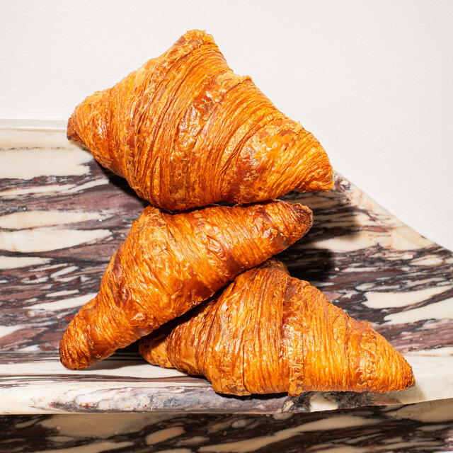
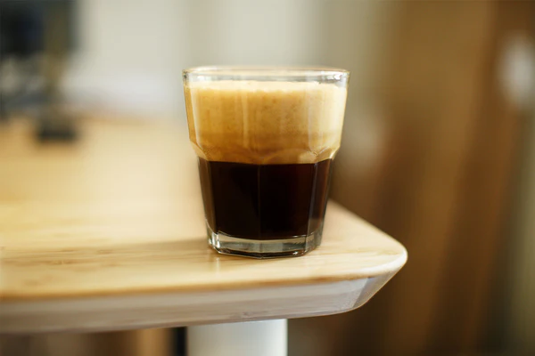
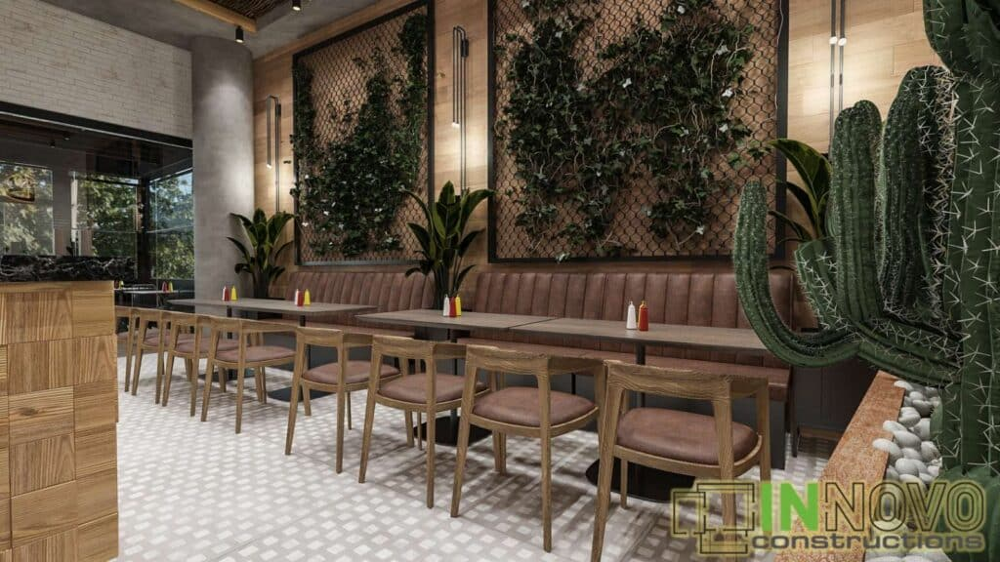

Σχετικά με εμάς
Το Serres Coffee Spot είναι ένας φιλόξενος χώρος στην καρδιά των Σερρών. Προσφέρουμε specialty καφέδες, φρέσκα ροφήματα και γλυκά snacks σε ένα νεανικό και χαλαρό περιβάλλον.
Ώρες λειτουργίας: Δευτ-Κυρ 08:00 - 22:00
Φωτογραφίες του χώρου



Μικρές γεύσεις
Δοκίμασε τα house-made muffins και cookies μας — ιδανικά με τον καφέ σου.
Επικοινωνία
📍 Τοποθεσία: Κεντρική Πλατεία, Σέρρες
📞 Τηλέφωνο: 23210 12345
📧 Email: info@serrescoffee.gr